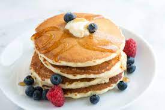

Fluffy Pancakes

Description
Recipe for making fluffy pancakes! This recipe will yield 4 servings.
Ingredients
- 3/4 cup milk
- 2 tablespoons white vinegar
- 1 cup all-pupose flour
- 2 tablespoons white sugar
- 1 teaspoons baking powder
- 1/2 teaspoon baking soda
- 1/2 teaspoon salt
- 1 egg
- 2 tablespoons butter, melted
- cooking spray
Steps
- Combine milk with vinegar in a medium bowl and set aside for 5 minutes to "sour"
- Combine flour, sugar, baking powder, and baking soda, and salt in a large mixing bowl. Whisk egg and butter into "soured" milk. Pour the flour misture in to the wet ingredients and whisk until lumps are gone.
- Heat a large skillet over medium heat, and coat with cooking spray. Pour 1/4 cupfuls of batter onto the skillet, and cook until bubbles appear on the surface. Flip with a spatula, and cook until browned on the other side.